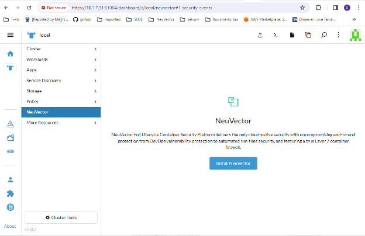
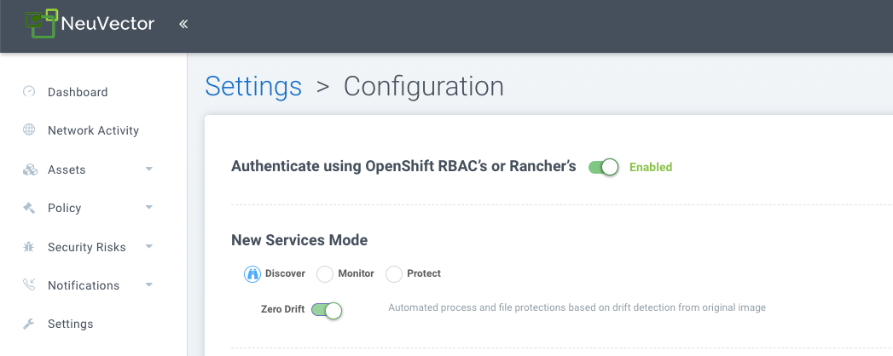

Implantação do Rancher
Implante e gerencie SUSE® Security através das Extensões ou Apps e Marketplace do Rancher
SUSE® Security pode ser implantado facilmente, seja através das Extensões do Rancher para clientes Prime, ou Apps e Marketplace do Rancher. A implantação padrão (baseada em Helm) de SUSE® Security implantará SUSE® Security contêineres no namespace cattle-neuvector-system.
|
Apenas implantações de SUSE® Security através das Extensões do Rancher (SUSE® Security) da versão 2.7.0+ do Rancher, ou Apps & Marketplace da versão 2.6.5+ do Rancher podem ser gerenciadas diretamente (login único no console de SUSE® Security) através do Rancher. Se adicionar clusters ao Rancher com SUSE® Security já implantado, ou onde SUSE® Security foi implantado diretamente no cluster, esses clusters não serão habilitados para integração SSO. |
SUSE® Security Extensão de UI para Rancher
Clientes Prime do Rancher podem facilmente implantar SUSE® Security e a Extensão de UI SUSE® Security para Rancher. Isso permitirá que usuários Prime monitorem e gerenciem certas funções e eventos de SUSE® Security diretamente através da UI do Rancher. Para usuários da comunidade, consulte a seção Implantar SUSE® Security abaixo para implantar a partir dos Apps e Marketplace do Rancher.
-
O primeiro passo é habilitar globalmente a capacidade das Extensões do Rancher, se ainda não estiver habilitada.


-
Instale o SUSE® Security-UI-Ext da lista disponível

-
Recarregue a extensão assim que a instalação for concluída

-
No seu cluster selecionado, instale o aplicativo SUSE® Security na aba SUSE® Security se o aplicativo SUSE® Security ainda não estiver instalado. Isso deve levá-lo aos passos de instalação do aplicativo. Para mais detalhes sobre este processo de instalação, veja a seção Implantar SUSE® Security abaixo.

-
O painel SUSE® Security deve agora ser exibido no menu SUSE® Security para esse cluster. A partir deste painel, um resumo da saúde de segurança do cluster pode ser monitorado. Existem elementos interativos no painel, como invocar um assistente para Melhorar Sua Pontuação (Risco de Segurança), incluindo a capacidade de ativar a varredura automatizada para vulnerabilidades se não estiver habilitada.

Além disso, os links no canto superior direito do painel fornecem links convenientes de login único (SSO) para o SUSE® Security console completo para uma análise e configuração mais detalhadas.
-
Para desinstalar a extensão, volte para a página de Extensões

Desinstalar a extensão de UI SUSE® Security NÃO desinstalará o aplicativo SUSE® Security de cada cluster. O menu SUSE® Security voltará a fornecer um link SSO para o console SUSE® Security.
Implantar SUSE® Security
Primeiro, encontre o gráfico SUSE® Security nos gráficos do Rancher, selecione-o e revise as instruções e vários valores de configuração. (Opcional) Crie um projeto para implantar, se desejado, por exemplo, SUSE® Security. Nota: Se você ver mais de um gráfico SUSE® Security, não selecione o que é para atualizar implantações de gráficos Helm legados SUSE® Security 4.x.

Implantar o gráfico SUSE® Security, configurando primeiro valores apropriados para uma implantação no Rancher, como:
-
Tempo de execução do contêiner, por exemplo, docker para RKE e containerd para RKE2, ou selecione o valor K3s se estiver usando K3s.
-
Tipo de serviço do gerenciador: mude para LoadBalancer se disponível em implantações em nuvem pública. Se o acesso for desejado apenas através do Rancher, qualquer valor permitido funcionará aqui. Veja a nota importante abaixo sobre como alterar a senha padrão do administrador em SUSE® Security.
-
Indique se este cluster será um Primário federado de múltiplos clusters ou remoto (ou selecione ambos se qualquer opção for desejada).
-
Volume persistente para backups de configuração

Clique em 'Instalar' após revisar e atualizar quaisquer valores do gráfico.
Após a implantação bem-sucedida de SUSE® Security, você verá um resumo das implantações, conjuntos de daemon e tarefas cron para SUSE® Security. Você também poderá ver os serviços implantados no menu Descoberta de Serviços à esquerda.

Gerenciar SUSE® Security
Agora você verá um item de menu SUSE® Security à esquerda, e selecionar isso mostrará um botão/tile SUSE® Security, que ao ser clicado levará você ao console SUSE® Security, em uma nova aba.

Quando este método de acesso de Single Sign On (SSO) for usado pela primeira vez, um usuário correspondente no cluster SUSE® Security será criado para o login do usuário Rancher. O mesmo nome de usuário do usuário logado no Rancher será criado em SUSE® Security, com um papel de administrador ou fedAdmin, e o provedor de identidade como Rancher.

Observe na captura de tela acima, que dois usuários do Rancher, admin e gkosaka, foram criados automaticamente para SSO. Se outro usuário for criado manualmente em SUSE® Security, o provedor de identidade será listado como SUSE® Security, conforme mostrado abaixo. Este usuário local pode fazer login diretamente no SUSE® Security console sem passar pelo Rancher.

|
É recomendável fazer login diretamente no SUSE® Security console como admin/admin para alterar manualmente a senha do administrador para uma senha forte. Isso mudará apenas a senha do SUSE® Security usuário administrador do provedor de identidade (você pode ver outro usuário administrador cujo provedor de identidade é Rancher). Alternativamente, inclua um ConfigMap como um segredo na implantação inicial do Rancher (veja os valores do gráfico para as configurações do ConfigMap) para definir a senha padrão do administrador como uma senha forte. |
Recursos de Permissão SSO NeuVector/Rancher
A interface do Rancher v2.9.2 permite selecionar recursos de permissão NeuVector ao criar Global/Cluster/Project/Namespaces funções. Quando um usuário do Rancher é atribuído a uma função com um recurso de permissão NeuVector, a sessão SSO NeuVector do usuário é atribuída ao respectivo recurso de permissão NeuVector. Isso é para fornecer aos usuários SSO funções personalizadas além das funções reservadas admin/reader/fedAdmin/fedReader.
Abaixo estão os recursos de permissão mapeados usados com as funções Global/Cluster/Project/Namespaces aplicáveis.
Recursos de Permissão Mapeados para a Função Global/Cluster
|
Os usuários precisarão adicionar manualmente * (Verbos) / services/proxy (Recurso) às Funções |
Grupos de API:
permission.neuvector.com
Verbos:
get // for read-only(i.e. view)
* // for read/write(i.e. modify)Recursos:
NeuVector, Escopo de Cluster
AdmissionControl
Authentication
CI Scan
Cluster
Federation
VulnerabilityNeuVector, Namespaced
AuditEvents
Authorization
Compliance
Events
Namespace
RegistryScan
RuntimePolicy
RuntimeScan
SecurityEvents
SystemConfigRecursos de Permissão Mapeados para a Função Project/Namespace
|
Os usuários precisarão adicionar manualmente * (Verbos) / services/proxy (Recurso) às Funções |
Grupos de API:
permission.neuvector.com
Verbos:
get // for read-only(i.e. view)
* // for read/write(i.e. modify)Recursos:
NeuVector, Namespaced
AuditEvents
Authorization
Compliance
Events
Namespace
RegistryScan
RuntimePolicy
RuntimeScan
SecurityEvents
SystemConfigDesabilitando SUSE® Security/Rancher SSO
Para desabilitar a capacidade de login em SUSE® Security a partir do Rancher Manager, vá para Configurações → Configuração.

Implantações Legadas do Rancher
O arquivo de exemplo implantará um gerente e 3 controladores. Ele implantará um aplicador em cada nó. Veja a seção inferior para especificar nós dedicados de gerenciador ou controlador usando rótulos de nó. Nota: Não é recomendado implantar (escalar) mais de um gerenciador atrás de um balanceador de carga devido a possíveis problemas de estado de sessão.
|
A implantação no Rancher 2.x/Kubernetes deve seguir a seção de referência do Kubernetes e/ou implantação baseada em Helm. |
-
Implante o catálogo docker-compose-dist.yml, os controladores serão implantados nos nós rotulados, os aplicadores serão implantados nos demais nós. (O arquivo de exemplo pode ser modificado para que os aplicadores sejam implantados apenas nos nós especificados.)
-
Escolha um dos controladores para o gerente se conectar. Modifique o arquivo de catálogo do gerente docker-compose-manager.yml, defina CTRL_SERVER_IP para o IP do controlador e, em seguida, implante o catálogo do gerente.
Aqui estão os arquivos de composição de exemplo. Se você deseja implantar apenas um ou dois dos componentes, use apenas essa seção do arquivo.
Arquivo de Exemplo de Composição do Rancher Manager/Controller/Enforcer:
manager:
scale: 1
image: neuvector/manager
restart: always
environment:
- CTRL_SERVER_IP=controller
ports:
- 8443:8443
controller:
scale: 3
image: neuvector/controller
restart: always
privileged: true
environment:
- CLUSTER_JOIN_ADDR=controller
volumes:
- /var/run/docker.sock:/var/run/docker.sock
- /proc:/host/proc:ro
- /sys/fs/cgroup:/host/cgroup:ro
- /var/neuvector:/var/neuvector
enforcer:
image: neuvector/enforcer
pid: host
restart: always
privileged: true
environment:
- CLUSTER_JOIN_ADDR=controller
volumes:
- /lib/modules:/lib/modules
- /var/run/docker.sock:/var/run/docker.sock
- /proc:/host/proc:ro
- /sys/fs/cgroup/:/host/cgroup/:ro
labels:
io.rancher.scheduler.global: trueImplantar Sem Modo Privilegiado
Em alguns sistemas, a implantação sem usar o modo privilegiado é suportada. Esses sistemas devem oferecer suporte à adição de capacidades por meio da configuração cap_add e à definição do perfil do apparmor.
Veja as seções sobre implantação com Docker-Compose, Docker UCP/Datacenter para arquivos de composição de exemplo.
Aqui está um arquivo de composição de exemplo do Rancher para implantação sem modo privilegiado:
manager:
scale: 1
image: neuvector/manager
restart: always
environment:
- CTRL_SERVER_IP=controller
ports:
- 8443:8443
controller:
scale: 3
image: neuvector/controller
pid: host
restart: always
cap_add:
- SYS_ADMIN
- NET_ADMIN
- SYS_PTRACE
security_opt:
- apparmor=unconfined
- seccomp=unconfined
- label=disable
environment:
- CLUSTER_JOIN_ADDR=controller
volumes:
- /var/run/docker.sock:/var/run/docker.sock
- /proc:/host/proc:ro
- /sys/fs/cgroup:/host/cgroup:ro
- /var/neuvector:/var/neuvector
enforcer:
image: neuvector/enforcer
pid: host
restart: always
cap_add:
- SYS_ADMIN
- NET_ADMIN
- SYS_PTRACE
- IPC_LOCK
security_opt:
- apparmor=unconfined
- seccomp=unconfined
- label=disable
environment:
- CLUSTER_JOIN_ADDR=controller
volumes:
- /lib/modules:/lib/modules
- /var/run/docker.sock:/var/run/docker.sock
- /proc:/host/proc:ro
- /sys/fs/cgroup/:/host/cgroup/:ro
labels:
io.rancher.scheduler.global: trueUsando Rótulos de Nó para Nós do Gerente e do Controlador
Para controlar em quais nós o Gerente e o Controlador são implantados, rotule cada nó. Escolha os nós onde os controladores devem ser implantados. Rotule-os com "nvcontroller=true". (Com o arquivo de exemplo atual, não mais do que um controlador pode ser executado no mesmo nó.)
Para o nó do gerente, rotule-o “nvmanager=true”.
Adicione rótulos no arquivo YAML. Por exemplo, para o gerente:
labels:
io.rancher.scheduler.global: true
io.rancher.scheduler.affinity:host_label: "nvmanager=true"Para o controlador:
labels:
io.rancher.scheduler.global: true
io.rancher.scheduler.affinity:host_label: "nvcontroller=true"Para o aplicador, para evitar que ele seja executado em um nó controlador (se desejado):
labels:
io.rancher.scheduler.global: true
io.rancher.scheduler.affinity:host_label_ne: "nvcontroller=true"